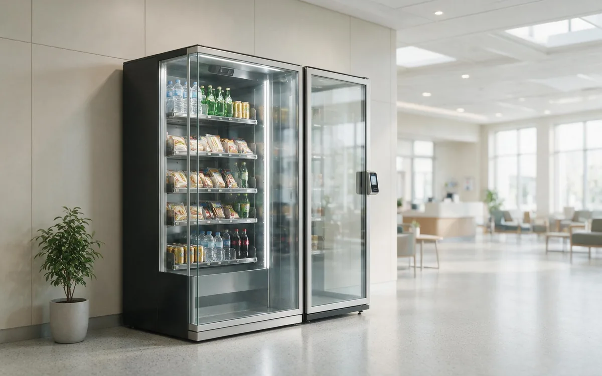

AI Vending for Hospitals

The scenario
Hospitals operate around the clock, but their food service rarely does. Cafeterias typically close by early evening, leaving night-shift staff, overnight patients, and waiting families with nowhere on-site to buy food, coffee, or a phone charger. An AI vending unit placed in a waiting area or staff corridor becomes a small 24/7 convenience stop for everyone from ER nurses to ICU families — and it captures revenue during the hours when the hospital’s own retail is dark.
This is not a typical retail audience, and that is exactly why the opportunity is strong. Hospital buyers are stressed, time-poor, and often trapped on-site for unpredictable stretches. They are paying for a solved problem, not a bargain, which means a well-run unit earns healthy margins on essentials that people genuinely need at 3 AM.
Who you are serving
- Medical staff. Nurses and doctors work 12-hour shifts that overlap cafeteria closing time. They need speed, nutrition, and caffeine at odd hours.
- Patients and families. Visitors waiting in the ED or ICU for hours — sometimes overnight — are the most price-insensitive buyers in the building.
- Overnight visitors. Families who stay through the night need comfort items: snacks, drinks, chargers, and toiletries.
- Support and facilities staff. Cleaners, technicians, and security add steady demand across all hours.
The defining pain point is the after-hours gap between roughly 7 PM and 6 AM, when staffed food service is closed but the building is fully awake. The second is the "I did not plan to be here this long" moment for families — and the chargers, toiletries, and snacks that moment creates.
Why AI vending fits
- The building never sleeps, so demand exists in every hour of the day — not just at lunch.
- Buyers are time-poor and convenience-driven; a grab-and-go format fits their constraints perfectly.
- Hospitals need zero added labor, and a unit costs nothing to keep "open" after hours.
- Enclosed smart cabinets are a good fit for clinical environments: no open shelving, no surveillance theater, easy to clean.
- The mix can be tuned to be compliance-friendly — nut-free, gluten-free, and low-sugar options align with hospital dietary standards.
Peak buying windows
| Window | Who buys & what | Why it happens |
|---|---|---|
| Pre-shift (6–8 AM / 6–8 PM) | Coffee, breakfast items, hydration for arriving crews | Staff fuel up before a long shift. |
| Intra-shift (10 PM–2 AM) | Fresh food, protein, caffeine | Meal replacement during 12-hour night shifts. |
| Visitor waiting (anytime) | Snacks, drinks, chargers, comfort items | Families spend 4–8 hours in waiting areas and buy to pass the time. |
| Early departure (5–7 AM) | Coffee, breakfast bars, hydration | People leaving before the cafeteria opens. |
Where to place the unit
| Location | Why it works | Best stocked with |
|---|---|---|
| Staff corridors & nursing stations | High-traffic, staff-facing zones where nurses pass constantly. The best-performing hospital placements. | Coffee, fresh food, protein, hydration. |
| ED and ICU waiting rooms | Long dwell times and high stress make these the strongest visitor-facing locations. | Snacks, drinks, chargers, comfort items. |
| Main lobby near the entrance | Serves visitors arriving at any hour and is easy to find. | A balanced everyday mix. |
| Near cafeterias or vending banks | Complements existing food service and benefits from established traffic patterns. | Drinks and quick meals. |
How to choose products for this venue
Hospital buyers split into two personas — staff and visitors — and the mix must serve both:
| Layer | Role in the unit | Example items | Margin profile |
|---|---|---|---|
| Hydration & clean energy | Traffic driver. Staff avoid sugar crashes on long shifts; wellness-forward drinks align with hospital standards. | Premium bottled water, electrolyte water, unsweetened iced tea, cold brew, clean energy drinks. | Low to mid, high frequency. |
| Fresh food & clean nutrition | Profit driver. Health-conscious staff and stressed visitors pay for real, high-protein food. | Sandwiches, protein boxes, yogurt, granola bars, nut-free and gluten-free snacks. | Premium. |
| Comfort & emergency essentials | Margin driver. Solves the "I did not plan to be stuck here" crisis. | Phone cables, earbuds, travel toiletries, hand lotion, lip balm, OTC pain relievers. | Highest in the unit. |
Explicitly label nut-free and gluten-free options — it improves compliance and justifies premium pricing. Keep the mix low-noise and easy to scan: stressed buyers want to find water, a snack, and a charger in under 30 seconds.
How to arrange the shelves
The display must be instantly scannable because buyers are under stress and time pressure:
| Shelf zone | What goes there | Why |
|---|---|---|
| Top shelves | Chargers, earbuds, toiletries, reading glasses | Discovered by waiting families without planning — the comfort/emergency zone. |
| Middle shelves (eye level) | Sandwiches, protein boxes, cold brew, protein bars | Fresh food at eye level signals quality and "real meal" availability. |
| Bottom shelves | Water bottles, sparkling water, heavier drinks | The staples residents reach for. |
Keep labeling clean and consistent — no clutter. In a hospital, a tidy unit reads as trustworthy, which directly affects whether staff and visitors buy.
Running the unit well
- Restock frequency: hospitals turn over quickly in high-traffic zones. Expect more frequent restocking than a typical retail site, and schedule top-ups around shift changes.
- Payments: contactless cards and mobile wallets are essential; staff should never need an app or an account.
- Food safety: refrigerated units must be certified, temperatures logged, and date labels enforced. This is non-negotiable in a clinical building.
- Hygiene and cleaning: the unit and its surroundings should be cleaned on the facility’s schedule, coordinated with housekeeping.
- Compliance: keep nut-free and gluten-free options in stock once labeled — running out of the items you advertise undermines trust quickly.
What success looks like
Hospital units are measured by availability as much as by sales — a unit that is empty at 2 AM has failed, even if the weekly number looks fine. Track:
| Metric | What it signals |
|---|---|
| Stockout rate during off-hours | The #1 metric. Night staff and families buy at 2 AM; the unit must be stocked for them. |
| Transactions per day | Staff corridors usually outperform public lobbies. |
| Items per transaction | A coffee-plus-snack-plus-charger basket is common in waiting areas. |
| Compliance stock availability | Nut-free and gluten-free options should never be out of stock if advertised. |
| Facility satisfaction | Feedback from nursing and facilities staff determines whether the placement survives review. |
Common mistakes to avoid
- Only stocking visitor snacks. Staff buy the most in corridors; ignoring them leaves the biggest audience unserved.
- Letting the unit empty overnight. Restock for the night window, not just the day shift.
- Ignoring compliance labels. If you label nut-free, keep nut-free in stock — a clinical audience checks.
- Skipping the facilities review. Power, network, cleaning, and placement approval should be locked in before installation.
- Treating it like a standard snack location. The mix, tone, and hygiene bar are different in a hospital, and buyers notice.
Frequently asked questions
Where do hospital vending units perform best?
Staff corridors and nursing stations typically outperform public lobbies, with ED and ICU waiting rooms the strongest visitor-facing locations.
What products are allowed in a hospital setting?
Most items are fine, but check facility policy on energy drinks and caffeine near clinical areas, and keep nut-free and gluten-free options labeled and in stock.
How do food safety rules apply?
Use certified refrigerated units, log temperatures, and enforce date labeling. Coordinate cleaning and compliance with the facility.
Do hospitals earn revenue from these units?
Yes — typically through a revenue share with the operator, with zero labor cost to the hospital. The amenity value for staff and visitors is often the bigger win.
Can the unit run overnight without staff?
Yes. It operates unattended 24/7, which is exactly how the after-hours food gap gets covered.